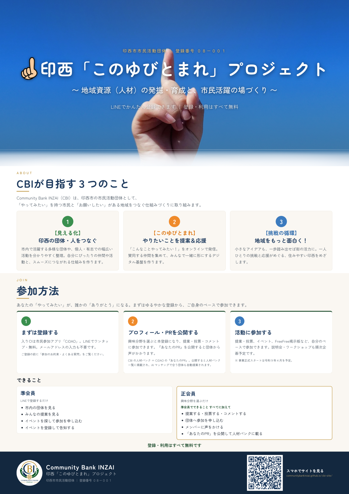
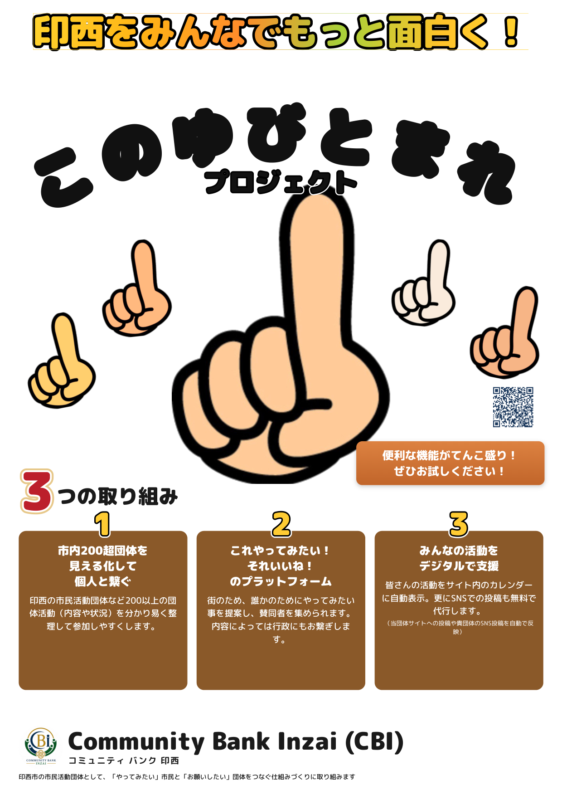

POSTER
A0告知ポスター（2案）
印西「このゆびとまれ」プロジェクトの掲示用ポスターです。仕上がりはどちらも A0縦（841 × 1189mm）。 印刷用のPDF、編集用のHTML、共有用の画像をそれぞれダウンロードできます。
パターン1 サイト連動版

サイトのトップページをそのまま1枚に圧縮した落ち着いた構成。上1/3が写真のメインビジュアル、 下に「目指す3つのこと」「参加方法」が入ります。行政・施設への掲示や、事業説明を兼ねた掲示に向きます。
- 印刷用PDF ↓ 約3.2MB／1ページ／書体埋め込み済み
- HTML版を開く ↗ 文面を直すときはこちら
- 画像（PNG）↓ 1240 × 1753px。共有・資料への貼り付け用
{kind=link}
パターン2 ポップ版

白地に大きな指のイラストを置いた、遠くからでも目を引く構成。 「印西をみんなでもっと面白く！」を主役に、3つの取り組みを短く伝えます。 商業施設・掲示板・イベント会場など、通りすがりに見てもらう場所に向きます。
- 印刷用PDF ↓ 約3.6MB／1ページ／書体埋め込み済み
- HTML版を開く ↗ 文面を直すときはこちら
- 画像（PNG）↓ 1240 × 1753px。共有・資料への貼り付け用
{kind=link}
使い方
そのまま印刷する
印刷用PDFをネット印刷（ラクスル、プリントパックなど）に入稿します。用紙サイズは「A0」、 屋内掲示ならマットコート紙、屋外や長期掲示なら合成紙・ラミネート加工を選ぶと傷みにくくなります。 A0が大きすぎる場合は、同じPDFをA1・A2に縮小して印刷しても文字は読めます（A2まで推奨）。
Canvaで編集する
- Canvaを開き、「デザインを作成」→「ファイルをインポート」を選ぶ
- ダウンロードしたPDFをアップロードする
- 読み込まれたページを開くと、文字・画像それぞれを選んで編集できます
書体について：パターン1は Zen Maru Gothic、パターン2は M PLUS Rounded 1c で組んでいます。 どちらもCanvaに同名のフォントがあるので、読み込み後に置き換わってしまった場合は テキストを選んでフォント一覧から選び直してください。
文面を直してPDFを作り直す
site/poster/ のHTMLを編集し、次のコマンドを実行するとPDFが再生成されます（Google Chrome が必要です）。
powershell -ExecutionPolicy Bypass -File site\poster\build.ps1 powershell -ExecutionPolicy Bypass -File site\poster\build.ps1 -Name cbi-poster-a0-b
上がパターン1、下がパターン2です。
QRコードのリンク先を変えるときは make_qr.py の URL を書き換えて
python site/poster/make_qr.py を先に実行してください（サイトのフッターのQRも同じファイルです）。
詳しい設計メモは同フォルダの README.md にあります。
仕様（2案共通）
| 仕上がりサイズ | A0縦 841 × 1189mm |
|---|---|
| 色 | RGB（ネット印刷はRGB入稿に対応。オフセット印刷でCMYK指定がある場合は要変換） |
| 塗り足し | なし（フチなし印刷を指定する場合は印刷所に相談してください） |
| QRコード | 誤り訂正レベルH／リンク先はCBI公式サイト／生成PDFから読み取り確認済み |
| 掲載していない情報 | 活動報告・お知らせ、団体情報・お問い合わせ（掲示中に内容が変わるため） |
※ パターン1の背景写真と手のイラストは元データの解像度の都合で、A0では約50〜70dpi相当です。 1〜2m離れて見る掲示物としては問題ありませんが、間近で見るとやや粗く見えます。